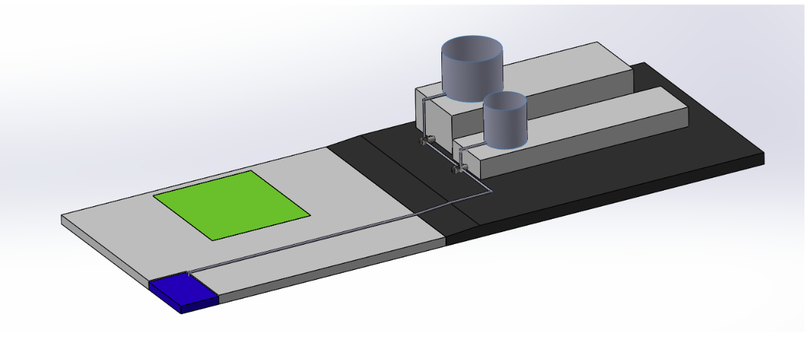
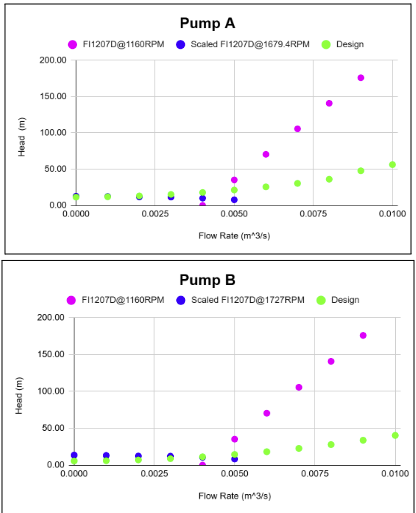

A full fluid system design that pumps water from a ground reservoir to two rooftop tanks. The project covers tank sizing, pipe layout, head loss analysis, pump selection and scaling, cavitation checks, and a full cost analysis.

The goal was to design a water system that pumps water from a ground level reservoir up to two storage tanks on the roof of a residential building. The system has to meet the building's water demand across the day, stay reliable, and keep both the build cost and the running cost low.
We compared three possible pipe layouts, chose the most efficient one, and designed the rest of the system around it.
Water use is not steady through the day. It is low from midnight to about 7 am, high from 8 am to 8 pm, and low again at night. We used the demand profile for each tank to find how much storage was needed so water is always available during peak hours.
Tank A was sized to 231 m³ and Tank B to 255 m³. Each size also includes margin for emergency overflow, one hour of full discharge, and the clearance needed to sit safely on the roof.
We modeled the pipe layout in SolidWorks to plan the routing and identify every fitting the water passes through. We then calculated the energy the pump has to supply. This means adding the major losses from friction along the pipe to the minor losses from every elbow, valve, and junction.
Pipe sizes were chosen with an iterative Schedule 40 process, landing on 2 inch and 3 inch branch lines. The flow came out turbulent, which is normal for a system this size, with a Reynolds number near 70,700 and a total head of about 19.78 m.

We selected a Taco FL1207 pump and scaled it to meet the head and flow the system needs. Using pump similarity laws, the base 1160 rpm pump was scaled to about 1760 rpm, with impeller diameters of 5.75 in for Tank A and 5.25 in for Tank B.
We plotted the pump curve against the system curve to confirm the pump operates near the correct point.
A pump can be damaged if the pressure at its inlet drops too low and the water starts to boil. To rule this out we compared the pressure the system provides, called NPSH available, against what the pump needs, called NPSH required.
For both tanks the available value was higher, so the pump runs safely with no cavitation.
We estimated both the cost to build the system and the cost to run it over 5 and 10 years. The pump and motor hardware was the single largest expense. Adding current interest and inflation raised the totals, and a worst case where the pump and valves need replacement raised them further.
| Scenario | 5 year | 10 year |
|---|---|---|
| Base cost | $80,653 | $92,722 |
| With interest and inflation | $82,323 | $96,369 |
| Worst case with replacement | $144,768 | $222,733 |